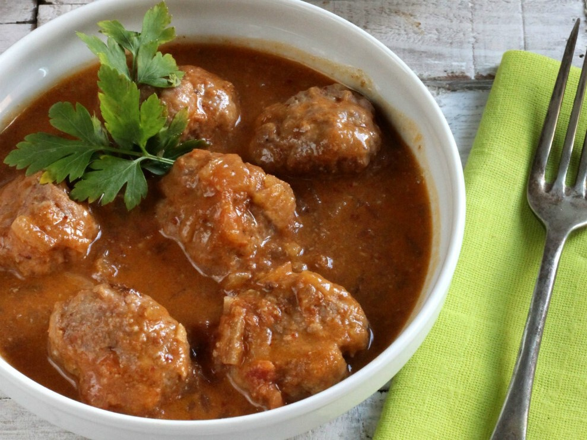

Albóndigas caseras de ternera en salsa de verduras al Jerez

Las albóndigas caseras de ternera en salsa de verduras al Jerez son un clásico de la cocina española, perfectas para un almuerzo reconfortante. Esta receta combina carne de ternera jugosa con una salsa rica en verduras y el toque especial del vino de Jerez.
Ingredientes
Para 4 personas
500 g de carne picada de ternera
1 huevo
2 dientes de ajo
2 cucharadas de pan rallado
2 cucharadas de leche
Perejil fresco picado
Sal y pimienta al gusto
Harina (para rebozar)
Aceite de oliva virgen extra
1 cebolla
1 zanahoria
1 pimiento verde
1 tomate maduro
100 ml de vino de Jerez
300 ml de caldo de carne
Dificultad: Fácil
Tiempo total: 50 minutos
Elaboración: 20 minutos
Cocción: 30 minutos
Cómo hacer albóndigas caseras de ternera en salsa de verduras al Jerez
En un bol, mezcla la carne picada con el huevo, los ajos picados, el pan rallado, la leche, el perejil, sal y pimienta. Forma las albóndigas y pásalas por harina.
Fríe las albóndigas en una sartén con aceite de oliva hasta que estén doradas por fuera. Reserva.
En la misma sartén, sofríe la cebolla, la zanahoria y el pimiento verde picados hasta que estén blandos. Añade el tomate pelado y picado, y cocina unos minutos más.
Incorpora el vino de Jerez y deja que evapore el alcohol. Añade el caldo de carne y tritura la salsa si lo deseas.
Vuelve a poner las albóndigas en la sartén con la salsa y cocina a fuego suave durante 20-25 minutos, hasta que estén tiernas.
Sirve caliente, acompañado de arroz blanco, patatas o pan.